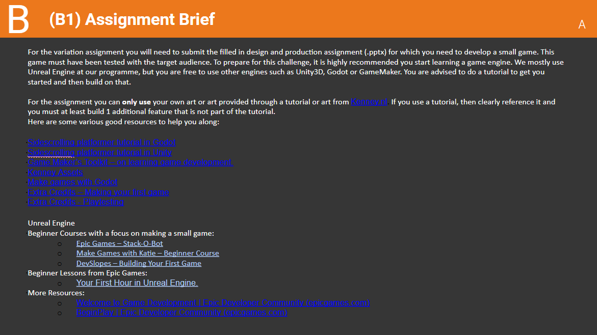
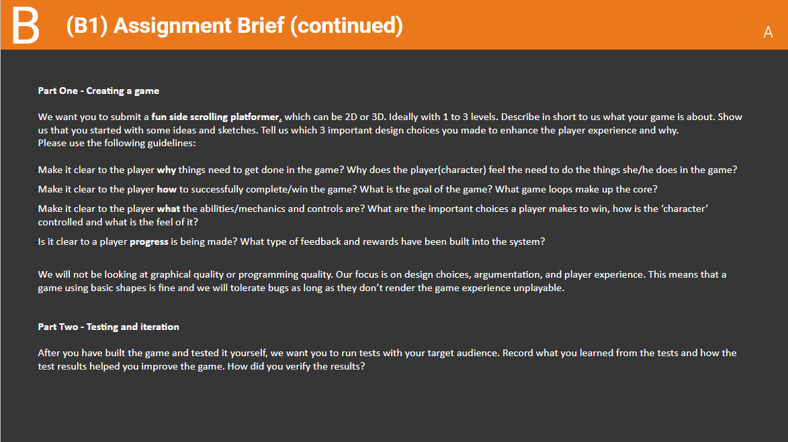
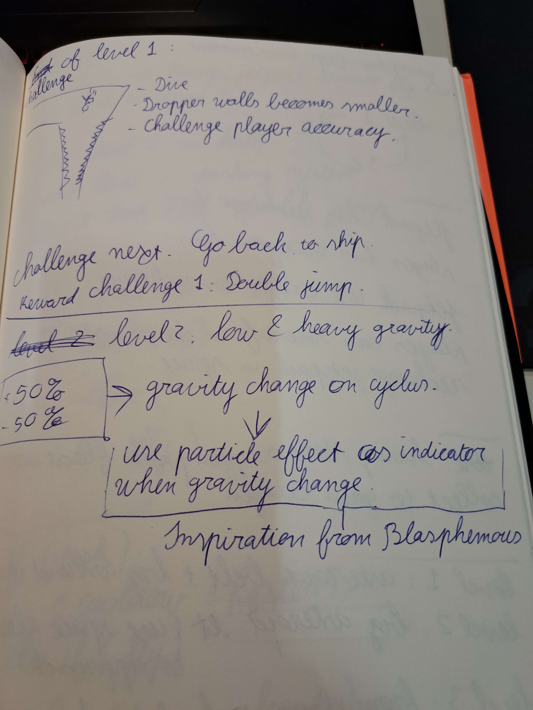
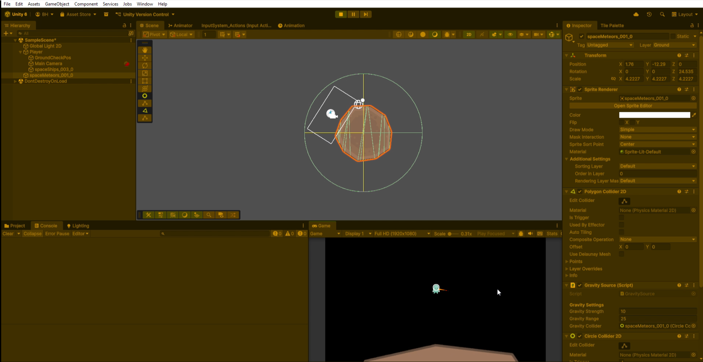
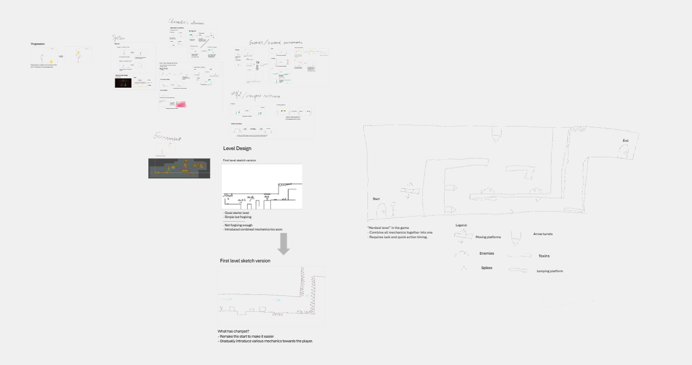
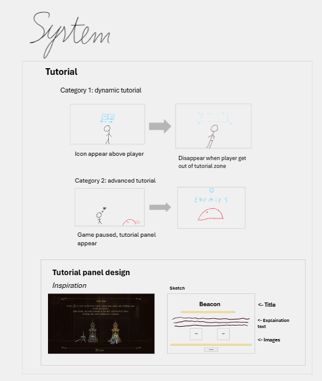
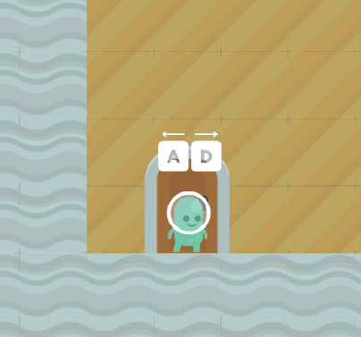
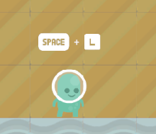
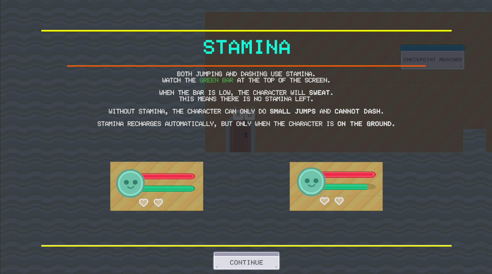
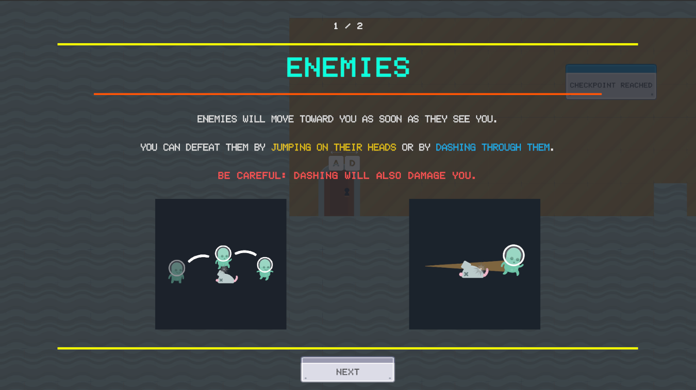

CODENAME DOULBE PULSAR
TÓM TẮT
Được phát triển như một bài tập tuyển sinh cạnh tranh cho trường Đại học Khoa học Ứng dụng Breda (BUas),
Double Pulsar là một tựa game đi ngang đồ họa 2D (2D side-scrolling platformer) nhằm chứng minh năng
lực cốt lõi của tôi trong
thiết kế game phân tích, tạo mẫu nhanh và ý đồ mang tính hệ thống.
Đối mặt với những hạn chế nghiêm trọng về tài nguyên và các rào cản kỹ thuật vật lý không lường
trước, tôi đã thực hiện một bước chuyển hướng thiết kế quan trọng ngay giữa dự án—xây dựng lại trò
chơi từ đầu để bảo vệ trải nghiệm của người chơi khỏi tình trạng say tàu xe (motion sickness) và
phình to phạm vi (scope creep). Phần danh mục sản phẩm này chi tiết cách tôi ưu tiên một khung thiết
kế hoàn thiện cao và đầy đủ chức năng thay vì một sự phức tạp lỗi, biến một thất bại kỹ thuật thành
một bài học kinh nghiệm sâu sắc về quản lý rủi ro và tiếp cận người chơi làm trung tâm
(player-centric onboarding).
Để tự mình trải nghiệm trò chơi, vui lòng truy cập trang itch.io của
Codename Double Pulsar.
TỔNG QUAN VỀ DỰ ÁN VÀ CÁC YẾU TỐ HẠN CHẾ CHÍNH
Mục tiêu chính của bài đánh giá đầu vào tại BUas không chỉ đơn thuần là bàn giao một trò chơi hoàn
chỉnh, mà là để thể hiện một phương pháp thiết kế game minh bạch và nghiêm ngặt. Quá trình đánh giá tập
trung mạnh mẽ vào lý do "tại sao" đằng sau mỗi quyết định thiết kế: chứng minh cho các lựa chọn cơ chế,
định hình một vòng lặp game rõ ràng, đảm bảo khả năng hiển thị tiến trình một cách trực quan, và thiết
lập một vòng lặp phản hồi thực nghiệm thông qua kiểm thử chơi (playtesting) bên ngoài.
Dựa vào bốn năm kinh nghiệm nền tảng của mình, tôi đã chọn Unity làm môi trường phát triển. Đề
bài yêu cầu một tựa game platformer từ 1 đến 3 màn chơi và bị ràng buộc bởi một hạn chế cấu trúc nghiêm
ngặt: không được phép sử dụng các tài nguyên nghệ thuật tùy chỉnh từ bên ngoài, giới hạn quá trình sản
xuất nghiêm ngặt trong các tài nguyên tự làm hoặc thư viện mã nguồn mở Kenney. Do thiếu kỹ năng mỹ thuật
chuyên nghiệp, tôi đã biến hạn chế này thành động lực thiết kế. Bằng cách phân tích các khung hoạt ảnh
tĩnh, đơn giản có sẵn trong thư viện Kenney, tôi
đã thiết kế ngược lại các thông số chuyển động của mình. Thay vì lập trình các cơ chế vật lý tùy ý rồi
ép buộc mỹ thuật phải khớp theo, tôi đã tinh chỉnh gia tốc, giảm tốc và các cung nhảy để phù hợp với
giới hạn hình ảnh của tài nguyên, đảm bảo ảnh đại diện (avatar) của người chơi mang lại cảm giác của một
thực thể phản hồi cao thay vì một khối hình học nguyên thủy không có trọng lượng.
Việc lựa chọn định dạng 2D cho phép tôi phân bổ nhiều băng thông tư duy hơn cho việc lập tài
liệu và lên ý tưởng hệ thống cấp cao. Tuy nhiên, điều này đã mang lại một lộ trình học tập dốc; nền tảng
học thuật của tôi chủ yếu tập trung vào 3D, và tôi chưa từng có kinh nghiệm chính thức nào trong việc
thiết kế màn chơi 2D. Để tránh tạo ra các bố cục nhịp độ tùy tiện và khó nhìn, tôi đã giải cấu trúc các
cơ chế môi trường của tựa game Blasphemous—cụ thể là nghiên cứu cách nó dạy cơ chế cho người chơi một
cách tinh tế thông qua hình học màn chơi. Sau đó, tôi đã đối chiếu các nghiên cứu tình huống này với các
buổi thảo luận nhóm cùng bạn bè để phác thảo các mô hình nhịp độ cấu trúc ban đầu của mình.
GIAI ĐOẠN 1: XÂY DỰNG Ý TƯỞNG VÀ MỤC TIÊU TỔNG THỂ
Bởi vì các tài nguyên mỹ thuật bị giới hạn thiếu đi các hoạt ảnh chiến đấu phức tạp, chiều sâu của lối
chơi phải được khai thác hoàn toàn từ sự phức tạp của hệ thống thay vì các hành động trực quan sinh
động. Tôi muốn vượt qua giới hạn của các hình khối cơ bản như lập phương và hình tròn để thử thách bản
thân tạo ra một cảm giác nhập vai, phản hồi tốt ngay cả trong những hạn chế chặt chẽ.
Điểm nhấn cơ chế cốt lõi được lựa chọn trở thành Điều khiển trọng lực (Gravity Manipulation), nơi người
chơi điều hướng qua các môi trường không ổn định bằng cách tận dụng các vùng trọng lực thấp để giải các
câu đố di chuyển cấu trúc.
Để gắn kết cơ chế này, phần cốt truyện đã mang lại sự đồng điệu ngay lập tức cho người chơi: một
phi hành gia bị mắc kẹt ngoài không gian sâu thẳm phải điều hướng qua các khu vực vũ trụ nguy hiểm để
khôi phục liên lạc với phi hành đoàn của họ. Được truyền cảm hứng từ cơ chế đẩy bằng gió trong vùng "Where Olive Trees Wither" của
tựa game Blasphemous, thiết lập cốt truyện đơn giản này đã trả lời cho câu hỏi thiết kế quan
trọng về động lực của người chơi ("Tại sao tôi phải băng qua vực thẳm này?").
Lộ trình sản xuất ban đầu đã vạch ra một đường cong nhịp độ Hướng dẫn (Tutorial) ➔ Thành thạo
(Mastery) rõ ràng, được phân bổ qua ba môi trường vĩ mô:
➔ Màn 1 (Bên ngoài không gian): Giới thiệu các thông số chuyển động cốt lõi, theo dõi
camera và vật lý trọng lực thấp cơ bản, đỉnh điểm là việc mở khóa thiết bị Jetpack (Phản lực).
➔ Màn 2 (Hang động thiên thạch): Leo thang độ khó không gian thông qua các cấu trúc hình học
môi trường nguy hiểm, yêu cầu người chơi phải thành thạo nâng cấp Nhảy đôi (Double Jump).
➔ Màn 3 (Lõi năng lượng): Một thử thách hệ thống đòi hỏi người chơi phải phân tích các mô
hình mối nguy hiểm ngẫu nhiên, buộc họ phải kết hợp tất cả các nâng cấp đã thuần thục trước đó để sống
sót.






SỰ CỐ KỸ THUẬT VÀ ĐIỂM QUAY ĐỔI QUAN TRỌNG
Ngay khi quá trình sản xuất thực tế bắt đầu trên nguyên mẫu không gian trọng lực thấp, dự án đã gặp phải
những biến chứng cơ chế nghiêm trọng.
Việc tôi thiếu các phương trình vật lý không gian nâng cao và phép tính vi tích phân quay đã dẫn đến một
hệ thống camera cực kỳ bất ổn cùng các điều khiển quán tính vụng về.
Một lỗi hệ thống nghiêm trọng liên tục triệt tiêu vận tốc của người chơi khi chuyển tiếp giữa các trường
trọng lực của các thiên thạch độc lập, làm mất đi chuyển động tự nhiên, mượt mà của lối chơi.
Thảm khốc hơn, nguyên mẫu này đã vi phạm một ràng buộc cốt lõi của đề bài: nó không còn là một
tựa game đi ngang (side-scroller) đúng nghĩa. Camera xoay động gây ra hiện tượng mất phương hướng không
gian nghiêm trọng và say tàu xe—một thất bại nghiêm trọng trong thiết kế trải nghiệm người dùng (UX).
Nhận thấy rằng nếu tiếp tục đi theo con đường này sẽ có nguy cơ trễ hạn chót nghiêm ngặt và thất bại
trước các yêu cầu cốt lõi của dự án, tôi đã gạt bỏ cái tôi của mình khỏi ý tưởng này và đưa ra quyết
định điều hành là hủy bỏ hoàn toàn nguyên mẫu đó.
Cuộc "thử lửa" này đã dạy cho tôi một bài học sống còn trong ngành: ranh giới rõ rệt giữa ý
tưởng lý thuyết và thực thi thực tế. Việc mạo hiểm một dự án quan trọng vào các cơ chế kỹ thuật rủi ro
cao, chưa được kiểm chứng có thể gây nguy hiểm cho toàn bộ chu kỳ sản xuất.
Quay trở lại với một tờ giấy trắng, tôi đã chuyển hướng sang một thiết kế ít rủi ro hơn và có độ
ổn định cao: một khung game đi ngang truyền thống gợi nhớ đến Super Mario Bros, nhưng được điều chỉnh
theo phong cách cơ chế của riêng tôi.
Tôi đã thu hẹp phạm vi dự án nhưng vẫn giữ lại cốt truyện cốt lõi và các cơ chế đã thành công. Thay vì
sinh tồn ngoài không gian sâu thẳm, phi hành gia giờ đây điều hướng trong một cơ sở bỏ hoang.
Để bù đắp cho sự thiếu hụt trong thiết kế màn chơi của mình dưới áp lực thời gian hạn hẹp, tôi đã cùng
một người bạn phân tích các bản phác thảo bố cục, mổ xẻ cách các màn chơi 2D thiết lập luồng cấu trúc
trước khi định hình lại các bố cục cuối cùng thành tầm nhìn thiết kế độc đáo của riêng tôi.
Các phác thảo ý tưởng ban đầu đã được chuyển đổi trực tiếp thành một lộ trình cấu trúc, đóng vai
trò là bản thiết kế hoàn chỉnh cho hình học màn chơi cuối cùng.

PHÂN TÍCH QUÁ TRÌNH TÍCH HỢP NGƯỜI DÙNG MỚI VÀ CẤU TRÚC GIAO DIỆN NGƯỜI DÙNG
Nhận thấy rằng tương tác ban đầu của người chơi sẽ quyết định mức độ gắn bó lâu dài của họ, tôi đã ưu
tiên tập trung vào một trải nghiệm tiếp cận ít rào cản (low-friction onboarding) cho Màn 1. Bố cục màn
chơi phản chiếu trực tiếp bản phác thảo ý tưởng ban đầu, chuyển đổi từ một bản thiết kế trên giấy thành
một môi trường giới thiệu đầy đủ chức năng.
Bởi vì quá trình tiếp cận người chơi đòi hỏi các không gian an toàn để thực hành cơ chế, tôi đã lựa chọn
triết lý "thiết kế vị tha" (forgiving design): các mối nguy hiểm từ môi trường được giảm thiểu tối đa,
và việc thất bại trong một thử thách nhảy nền tảng (platforming) không bao giờ đưa ra hình phạt tử vong.
Thay vào đó, thiết kế màn chơi định tuyến người chơi vào các vòng lặp thất bại hữu cơ, nơi họ có thể thử
lại một cách an toàn và thuần thục các cơ chế.
Cách tiếp cận phân tích này đối với nhịp độ ban đầu đã được xác thực trong giai đoạn kiểm thử
chơi (playtesting), khi 100% người thử nghiệm đã điều hướng thành công giai đoạn giới thiệu mà
không gặp phải sự ức chế hay nhầm lẫn kỹ thuật nào.
Hướng dẫn bằng hình ảnh & Hệ thống phân cấp UI
Để bổ sung cho quá trình tiếp cận không gian này, tôi đã áp dụng một khung thiết kế nghiêm ngặt
theo kiểu "hiển thị, không giải thích" (show, don't tell) cho thiết kế UI. Tôi đã bỏ qua các mô
tả bằng văn bản nặng nề cho các cơ chế chuyển động cơ bản—như đi bộ, nhảy và lướt—và thay vào đó tích
hợp
các biểu tượng vector tối giản, phổ quát trực tiếp vào môi trường thế giới. Lựa chọn cấu trúc này đã làm
giảm quá trình quá tải nhận thức, cho phép người chơi ngay lập tức hấp thụ các điều khiển theo ngữ cảnh
mà không làm gián đoạn đà lối chơi của họ.
Đối với các cơ chế nâng cao, đặc trưng của hệ thống đòi hỏi phải giải thích sâu hơn, tôi đã
triển khai các bảng hướng dẫn theo ngữ cảnh.
Các menu UI này được truyền cảm hứng về mặt phong cách từ các cửa sổ hiển thị tối tăm, nhập vai được tìm
thấy trong tựa game Blasphemous, cân bằng giữa sự rõ ràng mang tính thông tin với thẩm mỹ cơ sở bầu
không khí của trò chơi để giữ cho người chơi hoàn toàn đắm chìm ngay cả trong những khoảnh khắc tiếp cận
ban đầu.





TÍCH HỢP NGUY CƠ VÀ ĐÁNH GIÁ MỨC ĐỘ KHÓ KHĂN CỦA HỆ THỐNG
Để ngăn vòng lặp đi ngang tiêu chuẩn trở nên đơn điệu hay nhàm chán, tôi đã đưa vào các mối nguy hiểm
cấu trúc từ môi trường và kẻ địch tĩnh nhằm bơm thêm sự căng thẳng cơ chế và lồng ghép chiều sâu chiến
thuật.
Những yếu tố này bao gồm các rào cản platforming cổ điển như lưỡi cưa di động, các ụ súng/vật thể bắn tự
động, và các vùng chất thải độc hại nguy hiểm.
Thay vì triển khai các cạm bẫy này một cách tùy tiện, tôi đã sử dụng một phương pháp thiết kế
kết hợp. Các mối nguy hiểm được giới thiệu riêng lẻ trong các bối cảnh an toàn để người chơi thích nghi,
sau đó được lồng ghép một cách linh hoạt để tạo ra các câu đố không gian phức tạp.
Kiến trúc này đạt đến đỉnh cao ở Màn 3—cao trào thiết kế của trò chơi—nơi tất cả các yếu tố nguy
hiểm hội tụ một cách có hệ thống.
Điều này buộc người chơi phải đồng bộ hóa các cơ chế chuyển động của họ, đòi hỏi phản xạ tốc độ cao và
căn thời gian chính xác để vượt qua các thử thách cấu trúc mà không kích hoạt một "hiệu ứng domino"
trừng phạt của các sát thương liên tiếp.
Bố cục cuối cùng đã mang lại một sự cân bằng tối ưu trong việc tinh chỉnh độ khó—mang đến một trải
nghiệm vừa dễ tiếp cận đối với những người mới chơi, nhưng vẫn đủ lôi cuốn cho các game thủ platformer
kỳ cựu.
THỬ NGHIỆM TRÒ CHƠI, SỰ ĐA DẠNG CỦA ĐỐI TƯỢNG NGƯỜI CHƠI VÀ QUÁ TRÌNH CẢI TIẾN
Một trò chơi không thể được coi là hoàn thiện về mặt chức năng cho đến khi nó vượt qua vòng kiểm thử
chơi (playtesting) bên ngoài. Việc phát triển trong một môi trường khép kín sẽ tạo ra điểm mù cho nhà
phát triển, làm tăng xác suất gặp phải các lỗi nghiêm trọng và trải nghiệm người dùng bị rời rạc. Để đáp
ứng các yêu cầu khắt khe của bài tập tuyển sinh BUas và loại bỏ định kiến cá nhân, tôi đã tiến hành một
quy trình kiểm thử chơi có cấu trúc, sử dụng một nhóm nhân khẩu học đa dạng gồm bảy người tham gia bên
ngoài, hoàn toàn không liên quan đến quá trình phát triển của dự án.
Để kiểm tra tính dễ tiếp cận của hệ thống hướng dẫn ban đầu (onboarding), tôi đã chọn một tệp
nhân khẩu học mục tiêu rộng từ thanh niên (18–20 tuổi) cho đến những người lớn tuổi hơn (trên 60 tuổi).
Phạm vi rộng lớn này cho phép tôi đo lường mức độ dễ hiểu của hệ thống điều khiển và khả năng nhận thức
cơ chế thông qua các mức độ am hiểu trò chơi khác nhau.
Các dữ liệu thực nghiệm thu thập được từ các buổi thử nghiệm này đã đóng vai trò quan trọng
trong việc tinh chỉnh bản dựng (build) cuối cùng:
➔ Giai đoạn đầu (Các điểm ma sát): Hai người thử nghiệm đầu tiên đã gặp phải các lỗi nghiêm
trọng làm hỏng game và sự bất ổn định về vật lý, gây gián đoạn đáng kể đến trải nghiệm của họ. Tôi đã xử
lý các thất bại này như các dữ liệu đo lường từ xa (telemetry) cốt lõi, tạm dừng các bài kiểm tra để
triển khai ngay các bản vá lỗi kỹ thuật khẩn cấp (hotfixes).
➔ Giai đoạn sau (Xác thực): Sau những điều chỉnh này, năm người thử nghiệm còn lại đã báo cáo
mức độ hài lòng cao, điều hướng qua các màn chơi một cách mượt mà và xác nhận rằng đường cong tiến trình
mang lại cảm giác tự nhiên nhưng vẫn đầy lôi cuốn.
KẾT LUẬN VÀ SUY NGẪM CÁ NHÂN
Tài liệu này lưu trữ toàn bộ hành trình tiến hóa của Double Pulsar, thể hiện thực tế của quá trình sản
xuất game độc lập.
Bằng cách vạch ra những thiếu sót trong ý tưởng ban đầu, ghi lại các thất bại kỹ thuật nghiêm trọng, và
chi tiết hóa các bước chuyển hướng hệ thống nhằm bảo vệ sản phẩm cuối cùng, dự án này đóng vai trò là
bằng chứng cụ thể cho thấy sự sẵn sàng của tôi đối với việc nghiên cứu thiết kế game nâng cao.
Nó chứng minh một cách rõ ràng khả năng tự phê bình khách quan, sự thấu hiểu của tôi về tâm lý
người chơi, và sự sẵn lòng từ bỏ một nguyên mẫu lỗi một cách tự tin để bảo vệ trải nghiệm cuối cùng của
người dùng. Hành trình này đã khẳng định niềm tin nền tảng của tôi rằng thiết kế game tuyệt vời không
phải là sản phẩm của những thôi thúc ban đầu, mà là một khung cấu trúc được rèn giũa thông qua quá trình
lặp đi lặp lại kiên trì và kỷ luật.
01 / Gạt bỏ cái tôi & Kiểm soát phạm vi
Chứng minh sự trưởng thành chuyên nghiệp cần thiết để khai tử một nguyên mẫu lỗi từ sớm. Bằng cách ưu tiên sức khỏe của người dùng (giảm thiểu say tàu xe) và đảm bảo thời hạn chót thay vì sự đầu tư của cá nhân, tôi đã bảo vệ dự án thành công khỏi tình trạng phình to phạm vi (scope creep) gây chí mạng.
02 / Thiết kế ngược dựa trên ràng buộc
Biến sự thiếu hụt nghiêm trọng về tài nguyên mỹ thuật thành một thế mạnh cơ chế. Việc thiết kế các công thức chuyển động của nhân vật xoay quanh số lượng khung hình (frame-count) thực tế của các tài nguyên Kenney sẵn có đã đảm bảo một vòng lặp lối chơi chặt chẽ và phản hồi tốt.
03 / Tinh chỉnh & Lặp đi lặp lại dựa trên dữ liệu
Thiết lập một mô hình kiểm thử chơi (playtesting) có cấu trúc, đa thế hệ giúp loại bỏ định kiến của nhà phát triển, chuyển hóa các điểm ma sát thực tế của người dùng và dữ liệu đo lường từ xa (telemetry) của bản dựng sớm thành các bản vá lỗi khẩn cấp (hotfixes) khách quan giúp cải thiện sự cân bằng.